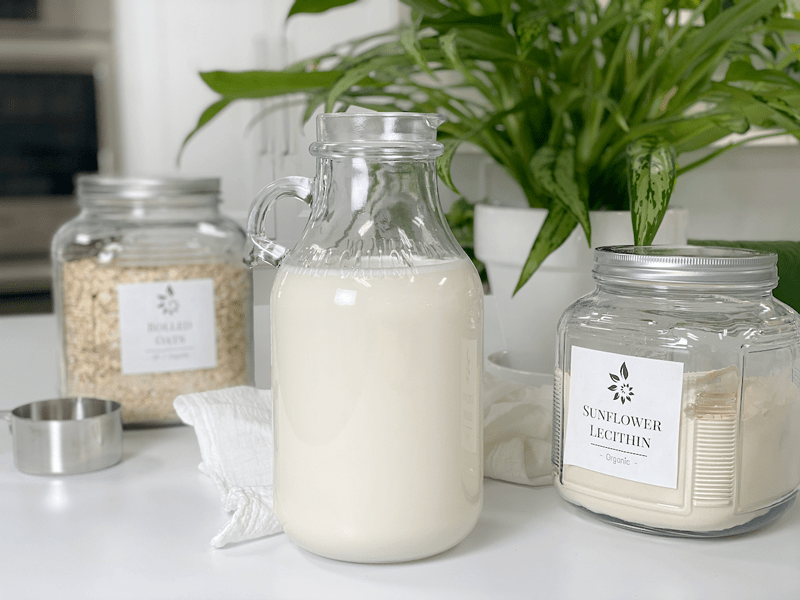
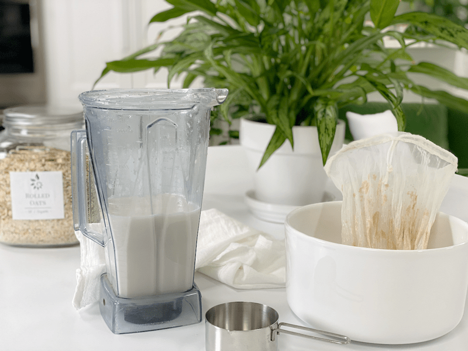
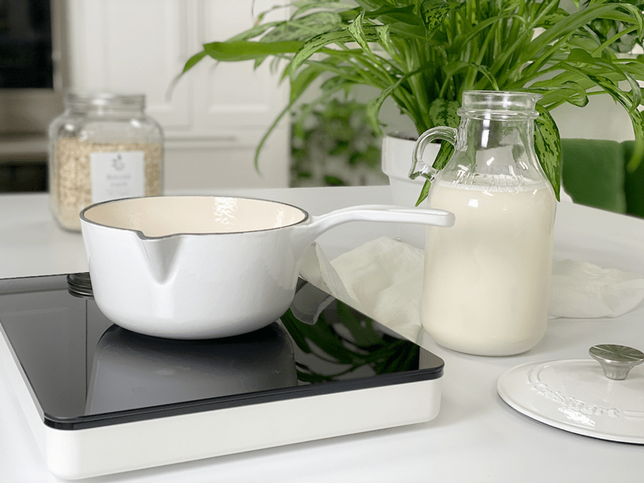
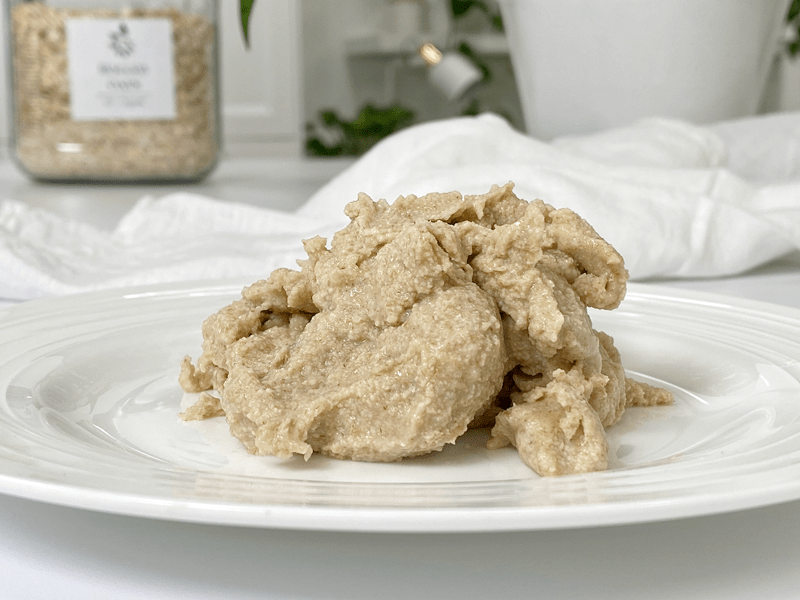

Oat Milk | Non Slimy
Oat milk is low in fat and both lactose-free and vegan. It has a light mild, slightly sweet oat flavor. I would compare the texture to low-fat or fat-free cow’s milk. It works well in both sweet and savory dishes. The light texture makes it good for (but not limited to) cereals, smoothies, light cream soups, and curries as well in baked goods.

Those of us who avoid dairy milk, by choice or necessity, are fortunate to live in a time when multiple delicious and healthy milk alternatives are easy to make. Like many plant “milk,” oat milk is cholesterol and lactose-free. It is usually tolerated by people with multiple allergies, so no matter what allergies you might suffer from, there are options. If gluten is an issue for you, be sure to use certified gluten-free oats for this recipe.
I was just at the store the other day, and I came across half an aisle of nothing but dairy-free milk alternatives. I was dumbfounded to a degree. Almond milk, hemp milk, soy milk, rice milk, quinoa milk, coconut milk, flax milk, macadamia milk… far too many to remember. I marveled at all the options until I started reading the ingredient lists. But… the cool thing is that we can make all of these “milks” in our own home, and avoid unnatural additives. Not to mention that we can tailor them to our very own liking when it comes to the pleasing of taste buds.

Oat milk has a distinctive, oaty/nutty flavor. Go figure – right? I feel safe in saying that if you enjoy oatmeal, you will enjoy oat milk. A plain bowl of oatmeal can taste rather bland and boring. (yawn). That is why the Internet is laden with hundreds of ways to dress up a bowl of oats. Well, the same can be said and done when it comes to oat milk. Plain, unsweetened, or unflavored oat milk is … well… plain and boring. Add a splash of your favorite sweetener, a dash of cinnamon or cardamom, or how about some vanilla? Add a banana for a creamy smooth texture… There are too many variables to list.
How to Make Non-Slimy Oat Milk
The main challenge that people come across when making oat milk at home is that it can have a “slimy” texture. This was the case for me when I first started tinkering around with it, but I have learned a few things along the way.
Don’t over-blend the oat milk
- If you have a powerful blender, like the Vitamix, don’t blend longer than 30 seconds.
- If you use a lower-end model blender or food processor, you will need to blend longer, but be careful that you don’t over blend. You might end up experimenting a bit based on the equipment you have.
Straining Technique
- Use a tight weave nut milk bag for the best results.
- I recommend running the oat milk through the bag 2 times but don’t use a death-grip“squeezing” action to avoid more slime. This makes oat milk more user-friendly for those with weak hand strength.
- If you don’t own a nut milk bag (invest in one), you can use a triple layer of cheesecloth, a linen tea towel, or even pantyhose to strain the milk. Do not press the milk through if using these items. You will want the milk to drain… maybe giving it a gentle nudge. If you press down hard to get the liquid through, it can lead to a slimy texture.
Don’t Soak the Oats
- Gasp! I know… if you’ve been on my site for a while, you know that I am one to soak all my nuts, seeds, and grains to help reduce phytic acid. BUT when it comes to oat milk, I am finding that the soaking process produces slimy milk. While phytic acid rarely affects people who eat a balanced diet (a key point made here), it should be noted for anyone who suffers from mineral deficiencies; you will want to either skip this recipe or soak the oats and be prepared for a little texture change.
Use Gluten-free ROLLED Oats
- Quick oats are overly processed.
- Steel-cut oats are not processed enough, which leads to longer blending, which leads to slim. It’s like the Goldie Locks story… we need the middle one so it will be just right! If you don’t have any other option than to use steel-cut oats, go ahead and soak them overnight first. Drain and rinse before using. The end milk most likely will have a slimy consistency, but depending on how you are using it, it may not be an issue.
Use Ice-Cold Water
- Heat can make the oats more starchy and gummy.
- Use ice-cold water or swap a cup of water for ice cubes when blending.
- You can even store the oats in the freezer, giving them that extra boost of coldness, just an idea.

Heating Oat Milk
I want to talk about how to use oat milk in warm applications because most people are not 100% raw. If you are, just skip past this section or not. Hang around and learn something new. :)
Oat Milk for Coffee
- If you are a coffee drinker and enjoy a foamy hot latte every once in a while, you can use oat milk with a few slight adjustments. I recommend following the recipe below using the Medjool date, 1 teaspoon sunflower lecithin along with a teaspoon of coconut oil. This will affect the flavor slightly, but fat is needed for better foam.
- You can also make the milk creamier by adding 1/4 cup of cashews to milk. If you do, follow step #2 (the bullet), so you know when to add the cashews.
- Oat milk doesn’t curdle in coffee like other nut milks.
Baking / Cooking with Oat Milk
- Because it gets thicker when heated, this is a great vegan milk choice for sauces, gravies, or any recipe that you want to thicken naturally.
- Oat milk works great in baked recipes. For most recipes, you can swap oat milk for regular milk at a 1:1: ratio.

Different Ways to Use Oat Milk & Pulp
Yea, don’t let that photo scare you. It looks that bad in real life, no camera tricks here. lol, It’s thick, wet, and slimy. It feels like sticky bread dough to me. BUT this lovely by-product as a use, so don’t go tossing it.
Oak Milk Pulp
- Don’t throw away the oat pulp; click here to learn how to make flour from it.
- Wrap the pulp in cheesecloth and place it in your next bath for a soothing spa treatment.
- Add the pulp to your next bowl of oatmeal or smoothie for the added fiber.
- Use the oat pulp in raw bread, cookies, and bar recipes.
Well, that about sums things up when it comes to making oat milk that isn’t slimy. I hope you enjoyed this post, please leave a comment below. blessings, amie sue
 Ingredients:
Ingredients:
Yields 3 cups
- 1 cup rolled, gluten-free oats
- 4 cups ice-cold water
- 2 Tbsp liquid sweetener or 1 Medjool date
- 1 tsp vanilla extract
- Pinch of sea salt
Preparation:
- Place the oats, ice-cold water, sweetener, vanilla, and salt in a high powered blender. Blend for 30 seconds on high.
- If using dates as your sweetener, start by first blending the ice-cold water, sweeter, vanilla, and salt. Blending until the dates are fully broken down. Then add the oats. By mixing in this order, you won’t over blend the oats. If you are adding cashews to make it creamier, add and blend in before adding the oats. (talked about that up above.
- Strain the milk by pouring it through a nut bag. GENTLY squeeze the liquid into a clean container.
- I recommend straining the milk twice to remove any excess starch, which can also lend to a slimy texture.
- Typically when making nut milks, we squeeze the living daylights out of the bag, ensuring that we get as much liquid out of it as possible. BUT with oat milk, don’t over squeeze. (this is part of the anti-slimy milk technique)
- Make sure your container is airtight when you store it in the fridge for up to 5 days. You’ll know it’s gone bad when it smells funny.
- The milk can separate as it sits, when ready to use, give it a quick shake and you are good to go.
- It is essential to keep the nut milk bag clean!
- Wash with organic, scent-free soap, such as Dr. Bronners. Do not use laundry soap. (always refer to the manufacturers cleaning method as well)
- Rinse well air dry. Ideally, in the direct sun to receive free sterilizing from the warm rays. Nylon nut milk bags should not be placed in the sun as the ultraviolet rays can damage the nylon.
- Do not hang the bags outside on the clothesline to dry. We don’t want an air-raid of bird poop coming down on it.
- Proper bag storage –
- I like to roll mine up and store in a glass jar. This will help keep it clean, protect it from dust, and accidental hole damage. A holy bag has no purpose when it comes to nut milk making.
- Also, if you use nut bags for multiple reasons, it would be a good idea to store them in separate jars, labeling them for their purpose, such as; nut milks, juicing, sprouting.
© AmieSue.com